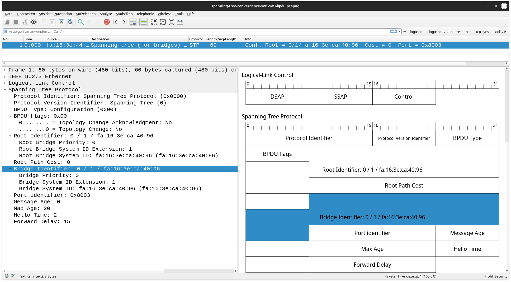

IT Technik - Netzwerkgrundlagen
STP ist definiert als IEEE 802.1d Es verhindert Netzwerkprobleme, die durch Loops in redundaten Netzwerken entstehen können:
Dies wird erreicht indem dynamisch Ports blockiert werden, sodass
Jeder Switch (oder Router) – im STP Bridge genannt – sendet in regelmäßigen Abständen kleine BPDU genannte Datenpakete. Dies hat zum einen den Zweck, dass
Außerdem enthalten sie Informationen, die dabei helfen, zu bestimmen, welches die aktuell schnellste Verbindung ist.

Abbildung 1: BPDU
Die erste wichtigste Information ist die BID. Sie enthält drei Felder (umgekehrte Reihenfolge):
Die BIDs sind die Grundlage der Bestimmung einer Rootbridge. Dies ist die Bridge (der Switch) mit der niedrigsten BID:
Ist die Root-Bridge ermittelt wird ihre BID in den BPDUs geteilt.
Außerdem enthalten die BPDUs ein Feld für die Hello Time. Diese ist normalerweise 2 (Sekunden) und sagt aus, in welchen Abständen jede Bridge BPDUs senden soll.
Welche Rolle ein Port einnimmt entscheidet STP anhand der Kosten. Es gibt 3 Rollen:
Die Kosten berechnen sich so: Zunächst wird für jede Verbindung zwischen 2 Switches aufgrund der Bandbreite (der Schnittstelle mit der geringsten Bandbreite), die Kosten anhand folgender Tabelle festgelegt:
| Bandbreite | STP-Kosten | Neue Kosten |
| 4 MB/s | 250 | 250.000.000 |
| 10 MB/s | 100 | 100.000.000 |
| 100 MB/s | 19 | 200.000 |
| 1 GB/s | 4 | 20.000 |
| 10 GB/s | 2 | 2.000 |
| 100 GB/s | N/A | 200 |
| 1 TB/s | N/A | 20 |
Anschließend werden als Kosten vom aktuellen Port bis zur Root-Bridge addiert.
Dafür werden für jede Verbindung zwischen zwei Switches die Portkosten an beiden Switches verglichen. Der kleinste Wert bestimmt die Pfadkosten für diese Verbindung.
Dann werden die Pfadkosten aller Verbindungen auf dem Weg zwischen dem aktuellen Switch und dem Root-Switch addiert.
Der Port an dem die Verbindung mit den geringsten Pfadkosten beginnt, wird der Root-Port.
Um Loops zu vermeiden müssen nun die redundanten Verbindungen geblockt werden. Redundant sind Verbindungen zwischen Switches, die nicht am Root-Port anliegen und potentiell einen Loop schließen.
Auf jeder dieser Verbindungen muss ein Switch seinen Port in den Blocking-Status versetzen.